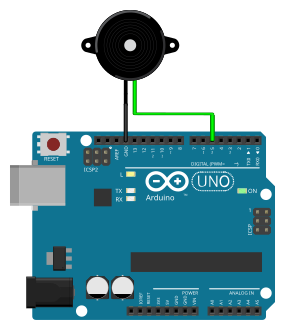

Buzzer
बजरMakes beeps. Passive buzzers need tone(); active buzzers beep with simple digitalWrite(HIGH).
What it does · के गर्छ
Makes beeps. Passive buzzers need tone(); active buzzers beep with simple digitalWrite(HIGH).
Pins on the component · कम्पोनेन्टका पिन
| Pin | Type | Role |
|---|---|---|
| + | Signal | From Arduino pin |
| − | Ground | GND |
Connect to Arduino Uno · UNO मा जडान
Example wiring (you may use other pins if you update the code). See Uno pinout.

Arduino code you need · आवश्यक कोड
Example use case · उदाहरण
Simple beep — Active buzzer: turn on for 200 ms, off for 500 ms using digitalWrite.
const int buzzerPin = 5;
void setup() {
pinMode(buzzerPin, OUTPUT);
}
void loop() {
digitalWrite(buzzerPin, HIGH);
delay(200);
digitalWrite(buzzerPin, LOW);
delay(500);
}
Doorbell pattern — Next step — passive buzzer: two different pitches with tone().
const int buzzerPin = 5;
void setup() {
pinMode(buzzerPin, OUTPUT);
}
void loop() {
tone(buzzerPin, 880, 150);
delay(200);
tone(buzzerPin, 1100, 150);
delay(2000);
}